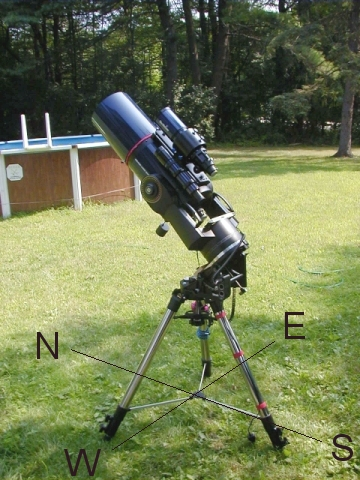
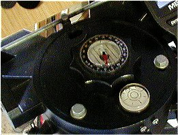
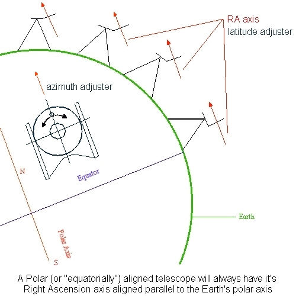
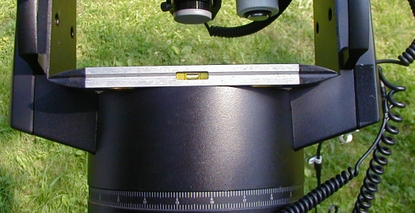
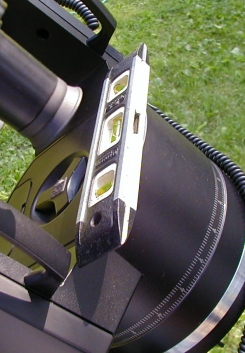

Polar Aligning a Meade LX90
Polar alignment is a necessary setup procedure when using your LX90 for imaging. It also has the advantage of only driving the RA axis. When setup properly it will give you long views through your EP without having to adjust for drift of the object. I strongly suggest the use of three carriage bolts to secure the wedge to the tripod, and not just using the 1/2" bolt supplied with your tripod. This is safer, and it makes for a more stable mount. Make sure you use stainless steel bolts, as other metals could interfere with your compass' accuracy.
Preliminary setup
The first and most important thing you need to do is level your tripod, and set it up in the proper orientation to the celestial pole. If at all possible, select a location where Polaris is visble. The image below shows my LX90 in polar "home" position. You should be able to look through the finder and see Polaris (once it's dark enough)

That single leg that the wedge hangs over should be pointed due south. Use the compass on the wedge to setup your tripod prior to attaching the LX90. Once on the wedge, the LX90 makes it hard to move the tripod - so setup the tripod first. Definately get assistance if this is required, or alternatively remove the scope from the wedge and start over, noting the amount of rotation needed for the tripod.
Tripod Setup - or, how level is level and which way is North?
To begin, orient the tripod so that the "south" leg is somewhat southerly. Adjust the wedge compass in it's holder so that the "white" arrow is pointing straight towards the level on the tripod head. If you've setup your compass (Meade's method) or (my method) for your local magnetic declination, the 'N" indicator will be slightly off to one side or the other of the arrow. Magnetic declination changes over time, so I wouldn't use Meade's chart, use this link instead. The instructions in the next paragraph refer to the way I setup my compass, not Meade's method. For Meade's instructions, follow the link above.
Move the tripod until the compass needle points to "N", not to the arrow. The closer you are to "true" north (not magnetic north) the better off you'll be. Your azimuth adjuster only travels so far, so if you're quite a few degrees off from true north, you may have to relocate the tripod to make up the difference. This is not an easy task with a polar mounted LX90. I can lift and carry my LX90/tripod a pretty good distance in alt/az, but the wedge makes the whole setup very cumbersome. The center of gravity is much higher and off center, making it a chore to move after setting up. A side note here - I took a piece of white paper and cut it to fit under the compass, this makes the graduations stand out much more clearly, so that it's easier to read in the dark.
Once you have the tripod leveled, ( I use a 9" torpedo level - the supplied level on my tripod was quite unreliable) put all your weight on the tripod to "set" the legs, and check the level again. Once you're happy the tripod is properly aligned, level and set, lift the LX90 up and hang it on the wedge, and then attach the remaining bolts to secure it. Plug in your power and Autostar, and any accessories you may be using. Adjust your weights and balance the scope.
| Updated 3/11/02 I've removed the stock bubble level from my
wedge and replaced it with a larger, more accurate level.
The level can be removed from the wedge and reset (If
your's is as bad as mine was, you may want to do this). I
used a small block of wood and a hammer to tap the level
just hard enough to break it's adhesive mount. Once you
can remove the level you can re-attach it with a small
amount of silicone adhesive. Level the tripod/wedge with
a good torpedo level, then put enough adhesive in the
hole to hold the level in place. Place the level back in
the hole, adjusting it so that the bubble is centered.
Recheck the level of the tripod/wedge and make sure your
bubble is centered. Wait at leaset 24 hours for the
silicone to cure. A nice little project to undertake when
you're under cloudy skies for a few days. If you want to
use a replacement level, the same instructions would
apply. Replacement levels can be purchased at most
hardware stores and from McMaster-Carr.  |
Wedge Setup - or, what's latitude got to do with it?
Your wedge should be setup on the tripod head so that the tilt plate is facing North (Polaris). The latitude adjuster should be facing south. If you've installed the wedge properly, this should be obvious after setting up the tripod in the previous section. If you install your wedge after the tripod is setup (I leave my wedge attached to the tripod), you need to orient it properly. On the standard Meade wedge, the azimuth adjuster is on the North side of the tripod head. Your lattitude adjuster should be set initially to your respective lattitude by the scale on the side of the wedge. These scales are not etched or engraved, so accuracy should be obtained by using Polaris/NCP to set the tilt plate. Don't rely on the scale for accuracy. Make sure your azimuth adjuster is "centered" before beginning alignment, so you have free travel in both directions.
The latitude adjuster aligns (makes perpendicular) the tilt plate with the polar axis - in turn setting the RA axis parallel to the Earth's polar axis, the azimuth adjuster is used to correct for true north adjustments. Note the difference in the tilt plates between "near equator" and "near pole".

Polar Home - getting ready for power up
Polar home is a strange position, you may feel at first that it's incorrect. The scope should have the handles "up" ( the finder on top of the OTA) and the OTA should be parallel to the forks. Very few of us with LX90's actually use the RA and Dec scales, but if you wish to reset them, now would be the time. Take some extra time here to be sure the OTA is as parallel to the forks as possible. I've found this to be the main reason to cause poor tracking and GoTo's.
Once that's done, I use the torpedo level again to insure the centerline between the two forks is parallel to the ground. I set the level so that the ends are supported by the fork handles, and the center is laid flat on the battery compartment. If you have a longer level, you can slip it through the fork handles instead. Loosen the RA lock and rotate the scope on the RA axis until the forks are level as shown below. You're now in Polar "home" position.

A 9" torpedo level set flat on the
battery compartment and resting on the fork arms. Rotate the RA
axis until the forks are level.

Ends of the level resting on the fork arms
If you're at a location where Polaris can't be seen, you can move on to initial alignment with the Autostar. If you can see Polaris from your location, use the wedge latitude and azimuth adjusters to center Polaris in your EP, or use a reticle EP if you have one. Polaris is *not* at the exact north celestial pole, so it need not be perfect. With Polaris centered in your EP, you're now only about 1/2 a degree from polar alignment.
Autostar Alignment - ready to observe and the final tweaks for a perfect polar alignment
There are three Autostar alignment methods for Polar mode - Easy, One star, and Two star. If you're just out for a visual observing session, Easy is the fastest. If you have limited view of the sky, you may want to select Two star, in which case you can select your own alignment stars from what's visible to you. In either method, alignment is the same as in Alt-Az mode - the Autostar will slew the scope to an alignment star, ask you to center it, and move on to the next.
One star alignment is a different beast. If you select one star, the scope will rotate about its RA axis, and just slightly in declination, and then ask you to center Polaris in the EP - not by using the Autostar controls like the previous methods, but by using the wedge adjusters. This method gives you a much more precise alignment to the celestial pole. You're actually adjusting the wedge at this point to the pole - not to Polaris as described previously. Once you center Polaris by using the wedge, the Autostar will slew to it's single star for alignment. Center the star in the EP, and hit Enter to continue on.
At this point you can start observing, or if you plan on doing some imaging, you may want to start checking and fine tuning your polar alignment by the drift method. Another excellent method for Polar alignment is using Dr. P Clay Sherrod's "Kochab's Clock". This is quick and accurate as well, especially after you've practiced it a few times. You should be familiar with the stars of Ursa Minor and know your finderscope's FOV.
If you're having a hard time visualizing drift alignment, and how or why stars "drift" in an unaligned scope, visit Bruce Johnston's excellent page on drift alignment. All you ever wanted to know about drift alignment, with excellent diagrams and explainations. Bruce's page is located here - drift-align
All in all, Polar alignment is a bit more tedious than Alt-Az, but the benefits far outweigh the extra setup time involved. After you've done it a few times, setup time is not that much more than required in Alt-Az mode. Because of the portability and quick setup time with an LX90, I can pack it in the car and be at a decent dark site within a half an hour.
| Back to Contents || Wedge adapter || Focuser || Azimuth
adjuster || Weight Set || Dovetail ||
|| Compass || Polar || Pinouts || Tours/Ephemerides ||